Clearwater, FL Police Department
Home MenuStrategic Plan
One needs to look only at recent national events to realize law enforcement has changed dramatically over the past several years, as have the expectations and demands upon the profession. The Clearwater Police Department recognizes the complexity of these changes and the impact these have upon our community, visitors to the city of Clearwater, businesses and our own personnel.
In this changing landscape, we must provide clear objectives and outline what we are trying to achieve both as an organization and in cooperation with our community! That is what this strategic plan aims to accomplish.
The purpose of this plan isn’t to provide a step-by-step plan for action. Rather, the purpose of this strategic plan is to identify for our valued employees, citizens and visitors, the overall objectives of our organization and what we are striving to achieve during the next five years as a public safety leader and guardian of our public’s safety. Law enforcement and society are changing rapidly and our plan must be both strategic and malleable, so that we can rapidly respond to changing environments and community needs.
CORE PRINCIPLES
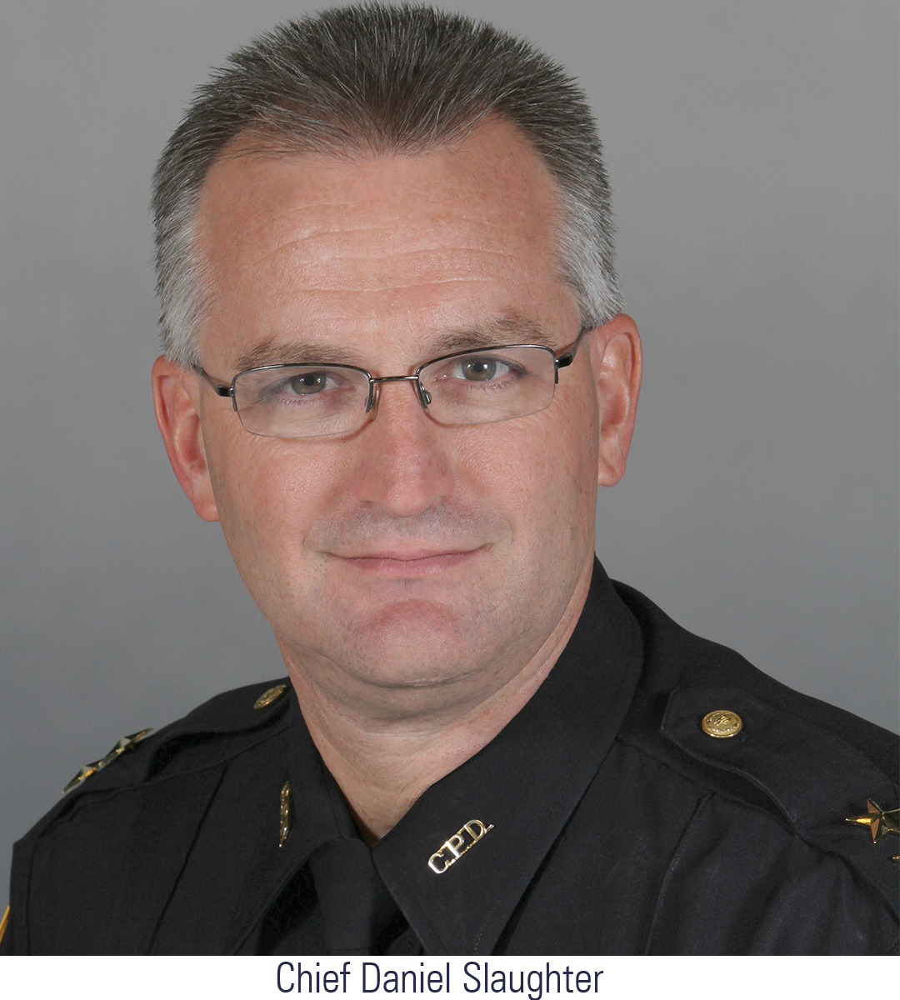
Before we can identify what we are striving for, we have to identify our core organizational principles -- the guiding force of our organization. They are what we believe in as an organization and what should guide our employees’ conduct as members of the Clearwater Police Department. These principles are what we stand for, what we believe, and perhaps most importantly, who we are as an organization.
Our four principles are:
Preservation of Life
Our foremost objective as a police department is to protect all citizens from harm, as well as protecting the safety and health of our own employees. Our role as public safety officers is precisely that – ensuring the safety of ALL persons, wherever possible.
Commitment to Excellence 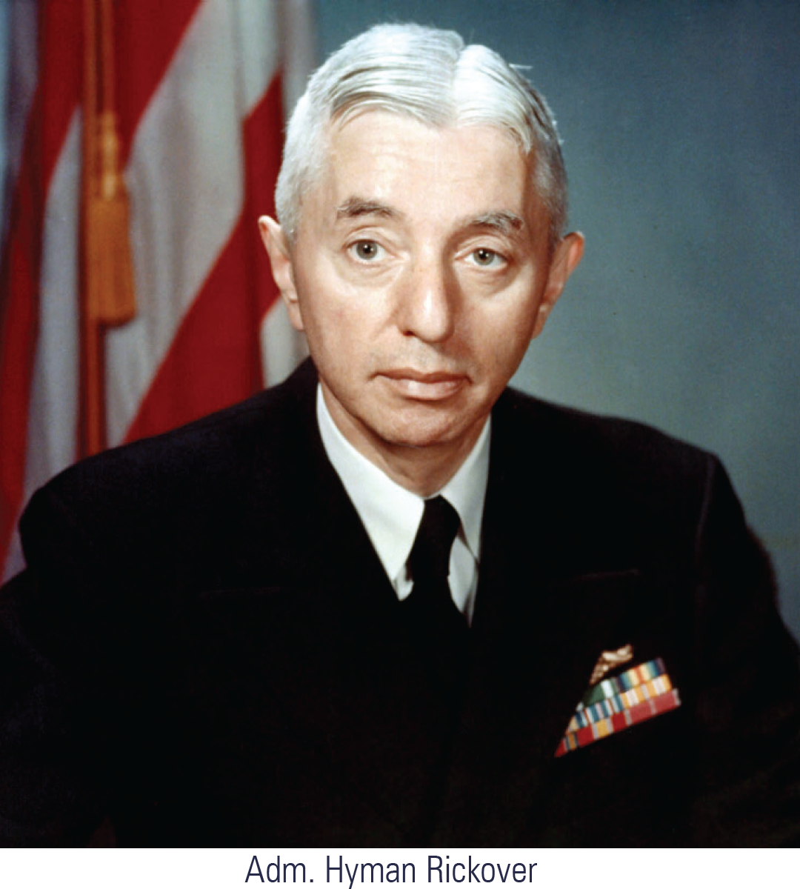
Adm. Hyman Rickover is commonly known as the father of the United States Nuclear Navy. In transforming and modernizing the naval fleet after World War II, Adm. Rickover overcame tremendous challenges, but created a structure which brought safety to highly complex systems which had never been created in the history of engineering. He created several rules to success which translate well to the complexity and challenges of law enforcement. Three of these rules are central to our Commitment to Excellence and will be key factors in the implementation of our strategic plan.

First, the Clearwater Police Department strives to have a rising standard of quality over time.
We must constantly strive to improve our performance in every arena of our services, implement new programs and processes which improve our organization, and remain at the forefront of law enforcement practices. This commitment to excellence extends to every element of our workforce and work product – in everything we do, we strive to continually improve. Status quo can never be acceptable.
-
Second, individuals involved in complex systems, such as law enforcement, should be highly capable. In the changing dynamic of law enforcement, it is critical to have highly competent, multi-faceted, diverse and intelligent individuals, who strive to serve our citizens, visitors and businesses. Recruiting individuals who possess these traits will be key to our future successes.
Thirdly, the role of our first-line supervisors is critical. Our sergeants and first-line supervisors are central to implementing our strategic plan, organizational goals and ensuring the high quality of work by our officers and staff. First-line supervisors are responsible to ensure the accuracy and completeness of our day-to-day work; appropriate selection of these individuals is crucial to our organization’s future.
Community Champions -
Our role as police officers in Clearwater is to be a Champion of our communities. What does being a community Champion mean? It is the primary role of our employees to engage our citizens, make our communities better, ensure a successful environment for tourism and business, prevent crime, and address fear of crime. Our officers are expected to stand up for – or Champion – our communities, to solve problems, and be active participants in ensuring the quality of life in Clearwater. Through this active participation and engagement in our community, we can effectively deter crime.
Principles of Sir Robert Peel
The principles of Sir Robert Peel, the founder of the Metropolitan Police in London, have formed the basis for law enforcement organizations since the early 1800s. These principles stand true even today and form the basis of our commitment to our community.
Principle 1
The basic mission for which the police exist is to prevent crime and disorder.
Principle 2
The ability of the police to perform their duties is dependent upon public approval of police actions.
Principle 3
Police must secure the willing cooperation of the public involuntary observance of the law to be able to secure and maintain the respect of the public.
Principle 4
The degree of cooperation of the public that can be secured diminishes proportionately to the necessity of the use of physical force.
Principle 5
Police seek and preserve public favor not by catering to the public opinion but by constantly demonstrating absolute impartial service to the law.
Principle 6
Police use physical force to the extent necessary to secure observance of the law or to restore order only when the exercise of persuasion, advice and warning is found to be insufficient.
Principle 7
Police, at all times, should maintain a relationship with the public that gives reality to the historic tradition that the police are the public and the public are the police; the police being only members of the public who are paid to give full-time attention to duties which are incumbent on every citizen in the interests of community welfare and existence.
Principle 8
Police should always direct their action strictly towards their functions and never appear to usurp the powers of the judiciary.
Principle 9
The test of police efficiency is the absence of crime and disorder, not the visible evidence of police action in dealing with it.
Objectives
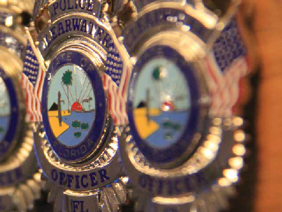Using our core principles as a guide, we must also identify for our employees what they are trying to achieve on behalf of the citizens, visitors and businesses they serve. The core objectives of the Clearwater Police Department are:
- Deter crime and promote a feeling of safety in our community.
- Ensure a community culture of trust in the Clearwater Police Department.
- Instill community confidence in the ability of the department.
Pillars
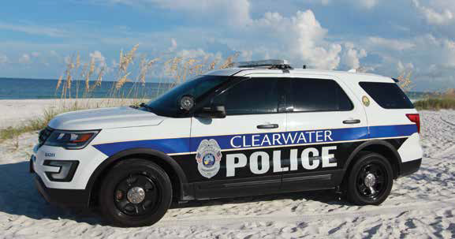Tackling Crime
Our core principles are clearly formed and shaped by the past. Yet, the Clearwater Police Department is an organization which is continually looking toward the future, while providing optimal service to our citizens. Using our core objectives as a guide to our actions, six essential pillars formulate our 2017-2022 Strategic Plan and our department’s future.
T6 Plan
- Tackling Crime
- Training/Employee Wellness
- Tourism
- Trust
- Technology/Infrastructure
- Traffic Safety
YOUR ZONE, YOUR RESPONSIBILITY
The Clearwater Police Department's policing philosophy is rooted in the belief that officers are directly responsible for what occurs in their assigned zone.
Addressing crime is certainly one of a police department’s most important responsibilities. The Clearwater Police Department employs a Precision Policing approach to crime and disorder. Precision Policing is centered on obtaining information and data regarding criminal activity, as well as emerging patterns of crime. We use this information to focus our resources on targeting problematic and prolific offenders, locations and events. Precision Policing is rooted in the concepts of Intelligence-Led Policing, which stipulates that the vast majority of crime is committed by a small percentage of offenders and that by focusing law enforcement resources on this group, law enforcement can significantly impact crime rates. This same philosophy is extended to problematic locations and events under the Precision Policing approach of our agency.
To achieve this goal, a wealth of crime data and information is available to all of our employees utilizing our secure Accurint Virtual Crime Center system. One of our unique approaches is providing access to this system to our patrol officers in the field, through their laptop computers. Our personnel can access information such as wanted subjects, sexual offenders, prolific offenders, criminal reports, Computer-Aided Dispatch information and more. This information is available in virtual time, allowing our officers to understand what is occurring in any given neighborhood in the city.
Our Community Problem Response Teams are comprised of specially trained officers assigned to each of our Patrol Districts, who work directly with their district commander, Criminal Investigations Division detectives, and our Crime Analysis Unit to quickly address crime patterns and trends.
Zone officers should consider themselves the “chiefs of police” for their assigned zone. The Accurint Virtual Crime Center gives officers real-time information on what is occurring in their zone of responsibility, but the expectation of our agency extends beyond simply providing them information. Officers are expected to proactively use this information to prevent crime through prevention activities or proactive patrol, identify suspects through investigation and work with the community to actively solve problems and reduce fear of crime within their area of responsibility. Problem solving may sound difficult, but it can be as simple as relaying information to fix a broken streetlight in a neighborhood which can serve as a deterrent to crime. Of course, large problem-solving ideas may include other elements of the police department, the city or the community. Positive outcomes can be achieved only through working together with our community.
Our approach to crime is predicated on readily sharing information between units and divisions of our department, with the goal of improving the lives of our citizens and visitors. None of this can be accomplished without the cooperation of the public and community organizations. Our commanders and officers have a shared responsibility of generating relationships with organizations and entities throughout the city of Clearwater which foster citizen involvement.
The Clearwater Police Department’s approach is additionally rooted in several key programs which are central to our focus on criminal activity and crime prevention:
- Armed Offender Initiative – The department places specific emphasis on the use of firearms in criminal offenses and the use of firearms by prolific and gang offenders. Detectives critically review investigations in which firearms are used, recovered or which involve known prolific or gang offenders. The department works closely with the Pinellas/Pasco State Attorney’s Office to ensure these investigations are pursued to ensure that repeat, violent offenders are held accountable for illegal activity and, as a result, reduce victimization in our community.
- Strategic Goal: Increase successful firearms-related prosecutions for prolific, convicted felon and gang offenders by 20 percent.
- Burglary Project: R.I.D. – This program is our agency wide response to burglary and automobile theft within our community. This program focuses on reducing opportunity for these offenses in our community, increasing awareness and prevention efforts, and developing suspects and arresting offenders of residential burglary, automobile burglary and automobile theft.
- Lock, Take, Secure Educational Campaign – A central pillar of Burglary Project: R.I.D. is ensuring citizens take appropriate steps to reduce their likelihood of becoming a victim of burglary or theft. The overwhelming majority of burglaries and thefts in our city are the result of individuals simply not properly securing their property and, therefore, making it easy for criminals. LOCK your car, TAKE your keys, and SECURE your belongings.
- Strategic Goal: Create five new lock, take, secure business partnerships which promote the department's safety message.
- Nuisance Property Abatement Program – The Clearwater Police Department focuses on holding property owners accountable for the impact their property may have on criminal activity in a particular neighborhood through the use of the Nuisance Abatement Program. The objective of this program is not to punish property owners, but to make them partners in ensuring the safety and security of their neighborhood.
- Domestic Violence Lethality Assessment Program– The Clearwater Police Department created a partnership with our local domestic violence shelter, the Haven of RCS, to identify victims of domestic violence who have a high likelihood of becoming a victim of escalating violence. The goal is to provide them appropriate shelter and referral services, with an aim of preventing additional violence.
- Excellence in Sexual Assault Investigation Program – In 2016, the Clearwater Police Department was one of four agencies in Florida to be awarded a grant by the Florida Coalition Against Sexual Violence to provide training to our employees in the best practices of sexual violence investigations. Though the department will complete this grant and training in 2017, this program remains an emphasis for our agency to complete thorough and unbiased investigations, while providing superior service and support to victims.
- Strategic Goal: Provide excellence in sexual assault investigation training to all new sworn personnel within their first year of development.
The Clearwater Police Department also recognizes the changing nature of crime and the ever-evolving nature of criminal activity. Cybercrime, for instance, is a growing threat throughout the United States. The investigation of these unique crimes presents myriad challenges to law enforcement. During the course of this plan, the department will develop strategies to effectively investigate and prevent these emerging criminal threats to our community. The Florida Center for Cyber Security, located at the University of South Florida, will assist in developing effective strategies.
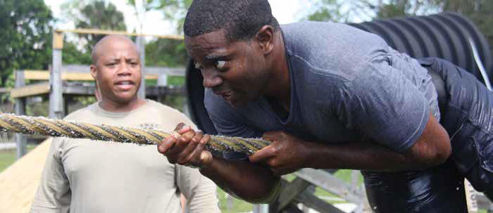
TRAINING EQUALS SUCCESS
Training/Employee Wellness
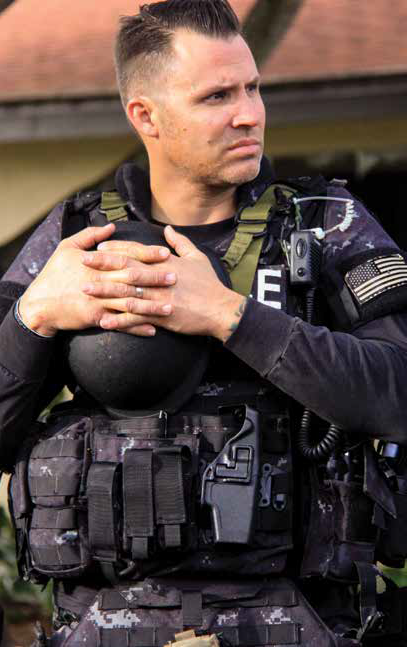A recent survey found that 68 percent of workers identified that training and development was the most important workplace policy. The Clearwater Police Department understands this and places a high emphasis on training of our workforce. This holds true for all of our employees – sworn and civilian.
No police agency can function without a highly trained, competent and healthy workforce. It is expected that safety and wellness are emphasized by every employee at every level of our organization. The Clearwater Police Department must not only ensure the physical well-being of our employees, but their mental health and fitness as well.
For the overall safety of our officers, the department emphasizes physical fitness. We will work to provide fitness information and guides which can assist employees in reaching their fitness goals. The department will explore additional avenues to improve employee fitness, such as incorporating an agency-affiliated athletic trainer and the possibility of an on-site fitness facility. The stresses upon law enforcement offices are unique. To address these challenges, the department will implement a “2, 10, 20 Program.” The aim of this program is to support the financial, physical and mental/spiritual health of our employees, both during their employment and into their retirement.
1. At two years of service, all sworn personnel will be provided with a minimum of four hours of financial planning and retirement resources, to ensure they are adequately prepared for their daily and future financial needs. This portion of the program should ensure all sworn employees can be prepared to support themselves financially into their retirement and are adequately prepared for the completion of their career. Providing mental health resources to our employees is equally important in ensuring our employees are in the proper mindset to engage in the challenging work of law enforcement. Studies have shown that police officers who are tired, frustrated or angry have a greater likelihood of being involved in an application of force, in a traffic crash or engage in conduct which may generate a complaint. The Clearwater Police Department aims to reduce the impact of these factors in our officers’ lives by providing a minimum of four hours of stress awareness, alcohol awareness and suicide awareness programs to our personnel.
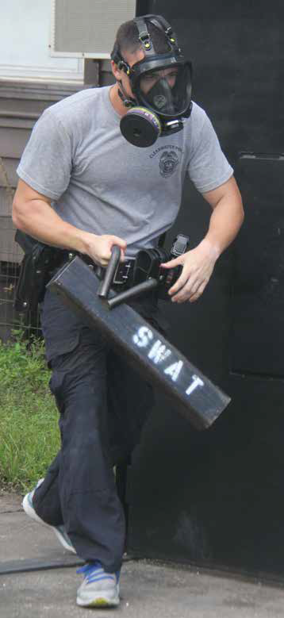
2. At 10 years of service, all sworn personnel will receive a nutritional and fitness assessment. By providing this information, officers have the tools, physically, to withstand the current and future health demands of law enforcement and ensure their well-being into retirement.
3. At 20 years of service, all sworn employees will attend “Operation: Restore.” The demands of law enforcement don’t impact officers only physically, but emotionally as well. This program seeks to alleviate accumulated stress and the emotional impacts of law enforcement, as officers prepare to either continue or conclude their careers.
The stresses of police work upon law enforcement officers are well known. But, what about the stresses upon spouses and partners of law enforcement officers? Often, the mystery of what our police officers encounter creates its own stress upon the loved ones of our employees. It is critical for spouses and partners of police officers to have a true understanding of what their loved ones encounter on a daily basis. This facilitates communication about the law enforcement profession and the stresses their loved one may encounter.
Strategic Goal: Conduct annual spouse/partner day training to provide insight and understanding of law enforcement profession.
The Clearwater Police Department will focus on several additional training topics, which are key to ensuring our employees have the appropriate skills, abilities and equipment to conduct their job duties at an optimal level:
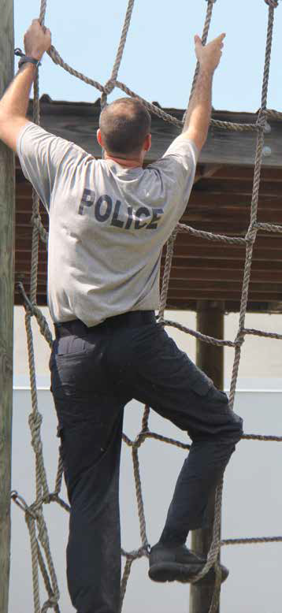
The department will increase analysis of “near-miss” and other critical incidents, which may not be the subject of mandated after-action reports. The primary goal is to ensure our employees learn from the dynamics and tactics of unique incidents and provide a path to prevent recurrence of actions which may endanger employees or citizens.
Strategic Goal: Create an employee-based committee to conduct an analysis of "near-miss" or other critical incidents and formulate both appropriate policy and training recommendations.
The changing nature of law enforcement requires the continual updating of department policy. The frequent updating of policy, coupled with the complexity of topics incorporated into new and revised policy, can create confusion in the true intent and application of these policies in the field.
Strategic Goal: Incorporate computer-based program which not only digitally distributes policy to our personnel but can provide scenario-based training questions. To improve employee comprehension and application of new and revised policies.
The vast majority of crashes involving our employees occur during low-speed incidents, which typically relate to backing up a vehicle. The department will create a renewed training focus on these low-speed incidents, to provide our employees knowledge and skills to lower our employee crash rate.
The opioid epidemic has significantly impacted our entire nation. The Clearwater Police Department was one of the first police departments in Florida to recognize the potential impact of these drugs on our community and employees. We quickly worked to train all of our employees in the use of Naloxone, the opioid reversal drug commonly referred to as Narcan.STRATEGIC GOAL: All sworn 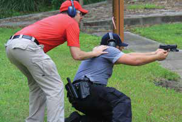employees have been trained in the use of naloxone, although the agency has only a limited number of naloxone kits deployed to select personnel. The department aims to equip all field personnel with naloxone by the end of the calendar year 2018.
Firearms training is a crucial need for all law enforcement officers. To improve the frequency, availability and quality= of firearms training, the department will aim to upgrade its current firearms training simulator during the course of this strategic plan.
STRATEGIC GOAL: Budget for and purchase an upgraded firearms simulator which can potentially incorporate both scenario and live-fire exercises.
Our officers are frequently involved in situations where they must provide medical aid to individuals with varying degrees of need. Often, police officers arrive prior to fire/rescue personnel and are in a position to provide life-saving assistance to individuals, if they are provided with proper training and first-aid resources.STRATEGIC GOAL: Provide tactical first-aid training and improved first-aid equipment to sworn and field personnel.
The Clearwater Police Department previously began implementation of an implicit bias training program during our previous strategic plan. The department initiated this Fair and Impartial Policing training through Dr. Lorie Fridell, a national expert at the University of South Florida. The curriculum for this training has been updated prior to the completion of the training of our personnel.
STRATEGIC GOAL: Update the department's biased policing curriculum and complete training of all sworn personnel.
During 2017, the Clearwater Police Department began the process of updating our evaluation system provider. Though this may change the mechanism by which evaluations are completed, the evaluation criteria we utilize to measure our employees’ effectiveness and provide feedback in their development has not been updated, and does not reflect the goals and objectives outlined in this strategic plan. The employees of the department should have clear understanding of expectations relating to their performance, as well as receiving evaluations which gauge their performance in support of the department’s principles, objectives and strategic goals.
STRATEGIC GOAL: Implement updated evaluations categories and criteria that appropriately evaluate the departmental principles, objectives and strategic goals.
Understandably, our employees are concerned with developing their personal ability as a law enforcement officer and reaching their career objective of selection to a specialized assignment or promotion. Currently, the department has limited criteria to obtain selection to a specialized assignment or promotion. It is imperative that, to the extent possible, the department creates clearly identified career paths – through education, training, reading assignments or other means – so that the agency’s expectations are clearly communicated to those seeking these advanced positions. Establishing these requirements will assist in preparing individuals for these opportunities, by ensuring they have the required skills and experience to achieve success. Furthermore, the department will seek to further prepare our employees in attaining foundational skills, such as resume preparation and interview preparation.
STRATEGIC GOAL: Create structured eligibility criteria for identified specialized assignments and promotional opportunities.
Tourism
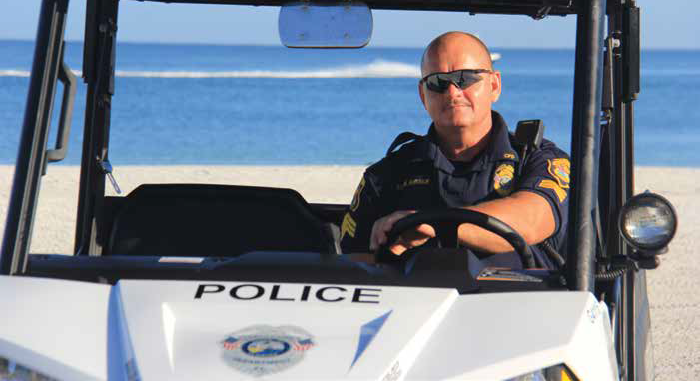
The city of Clearwater is a national and international tourist destination. No matter the reason for their visit, the police department is tasked with creating an environment that supports the success of all of our tourist-related businesses and ensures the safety of our visitors.
Given the unique nature of the tourist entities operating within our city, our department must be prepared for virtually any scenario. To actively monitor potentially criminal or terrorism-related threats, the agency will implement a real-time crime center. This center will be capable of monitoring inputs from a variety of sources and providing actionable intelligence and crime-related information to field personnel, to quickly resolve emerging incidents and criminal activity.
Central to the real-time crime center will be the ability of the department to expand public and private partnerships which will supply us with real-time access to video surveillance equipment from a variety of sources throughout the city. Doing so will ensure that our personnel have access to critical, real-time information and images, which can ensure a rapid, informed and safe resolution to a given incident.
STRATEGIC GOAL: Budget for and implement a real-time crime center that is capable of monitoring criminal and terrorism-related incidents
STRATEGIC GOAL: "Operation: Safe Clearwater" to centralize access to public and private video surveillance within a central monitoring location for department personnel.
The continued revitalization of the downtown core, through the “Imagine Clearwater” project, is anticipated to draw a significant number of businesses, residents and visitors to this area. Our agency must be prepared to support this key initiative, which will present unique policing demands and will involve an influx of residents, businesses and visitors.
STRATEGIC GOAL: As "Imagine Clearwater" takes shape, develop a plan to police the revitalized area, ensuring the safety and vitality of residents, businesses and visitors.
With incidents of terrorism throughout the world, our agency must be prepared for an event which we strive to ensure never occurs in our community. We must recognize that an event could occur at any location, at any time, and be diligent in our assessment of potential targets within our community.
Key to our preparation is assessing critical infrastructure and targets within our city and conducting these assessments in light of new terrorism practices, which have been revealed throughout the world. The department must develop response and continuity plans for each individual site, while forecasting a variety of attack methods. Central to these response plans is the ability to train our personnel on the content of these response plans and developing institutional proficiency.
STRATEGIC GOAL: Develop terrorism response and continuity of operations plans for key locations within the city of Clearwater.
In any such terrorism event, our police officers will be the first responders. To protect our personnel from a variety of incidents, it is imperative to upgrade and replace their personnel protective equipment.
STRATEGIC GOAL: Budget for and upgrade/replace the department's current personnel protective equipment.
TRUST
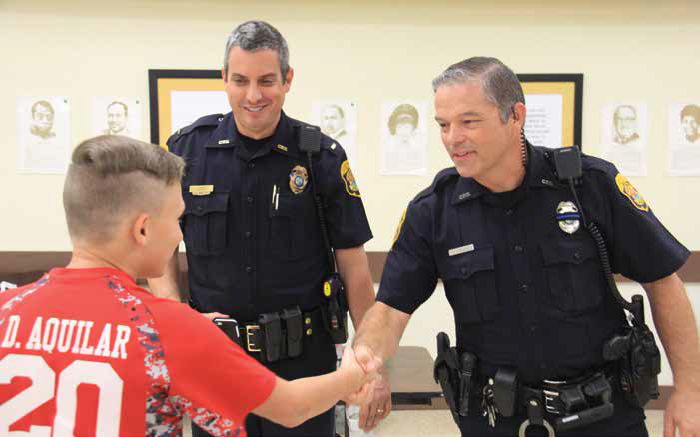The definition of the word trust: " assured reliance on the character, ability, strength, or truth of someone or something."
Community trust is a vital component for any police agency. Without it, no police department can function, or
even start to fulfill its commitment to the community. The President’s Task Force on 21st Century Policing identified “trust” as the first principle in recommendations for the future of policing because it is central to the public-police relationship.
Why is trust important to law enforcement and our city? An abundance of research supports that citizens are more likely to obey the law when they believe that those who are enforcing it have legitimate authority. Our citizens give our officers a tremendous amount of power which is not conferred on any other area of government – to enforce the law, make arrests, and, at times, use physical force. This authority is provided to us because the public trusts we will use this power and authority in just and righteous ways, for the overall good of our community.
Therefore, it is inherent in our personnel to conduct themselves in a manner which continually maintains this most precious confidence. How does the Clearwater Police Department maintain this trust? Our officers are instilled with the belief that they are our community’s Champions – ones who stand up for what is just in our community, who are honest and unbiased. Our officers are continuously reminded that enforcement isn’t the sole mechanism to prevent crime and disorder in our community. Our Community Champion mindset emphasizes both citizen engagement and problem-solving in our communities, while still targeting criminal elements which may prey on our citizens.
Community members confer legitimacy only on those they believe are acting in procedurally just ways. Supporting community trust is maintained by incorporating procedural justice into our department training, daily operations and community education. Research outlines that when community members perceive they are treated fairly and with respect by the police, they are more likely to have favorable views of the police, even during enforcement actions by law enforcement. Community outreach with open communication with citizens and business owners, and a culture of organizational transparency, can help build goodwill and reduce mistrust. This is achieved through several key points:
- Guarding Against Bias – Because we are human, we all have biases which are the result of our individual experiences. Explicit bias, or conscious prejudice, is not tolerated by our organization. We recognize, however, the implicit bias that we all have exactly because we are human. This is why we aim to train all of our personnel to understand implicit bias and recognize its potential impact on their actions as law enforcement officers and the actions of citizens, who may also be driven by implicit biases.
- Sharing Policing Data with the Public – The Clearwater Police Department already shares a wealth of crime and other data with the public through the use of our RAIDS Online software. Additionally, the agency is exploring ways to extend additional policing data, such as use of force and other relevant information, with the public during the course of this strategic plan.
- Sharing Discipline Data with the Public – The department already shares officer discipline data on our website.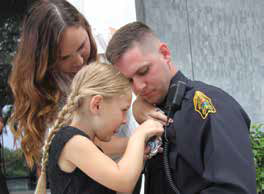
Procedural justice has internal aspects as well. Treating our personnel fairly improves officer attitudes and performance. Those officers with a positive outlook are more likely to relate these positive interactions with the community.
The Clearwater Police Department previously initiated a Sworn Recruitment Strategic Plan to improve the diversity and skills of our workforce. In order to appropriately reflect the population we serve and obtain optimal candidates for employment, we must continually improve our recruiting strategy to explore new and inventive methods. These strategies should focus on previously untapped resources and establish routine communication with entities which may support referrals of diverse and highly competent candidates. Maintaining trust from our community is additionally supported by reformatting our field training, evaluation and promotional processes to ensure implementation of the community engagement and problem-solving objectives of this plan.
STRATEGIC GOAL: Update the department's sword recruitment strategic plan
STRATEGIC GOAL: Re-evaluate field training and evaluation rating categories to gauge officer performance categories indicated through this strategic plan.
Central to the goal of accelerating and maintaining community trust is ensuring open communication with citizens, visitors and business owners. Our agency will continue to explore new means of expanding this conversation. The goal is to constantly work, cooperatively, toward a safe and secure Clearwater.
The Clearwater Police Department already has significant digital communication tools to provide interactive communication between our citizens and the police department:
- TIP411 – A service that allows individuals to engage in anonymous text/chat with our agency, through text message (text keyword CWPD to 847411), our TIP411 smartphone application, or through our website (www.clearwaterpolice.org).
- CitizenObserver Email Notifications – Citizens can sign up to receive emails about community meetings, crime events or other concerns which may impact their community.
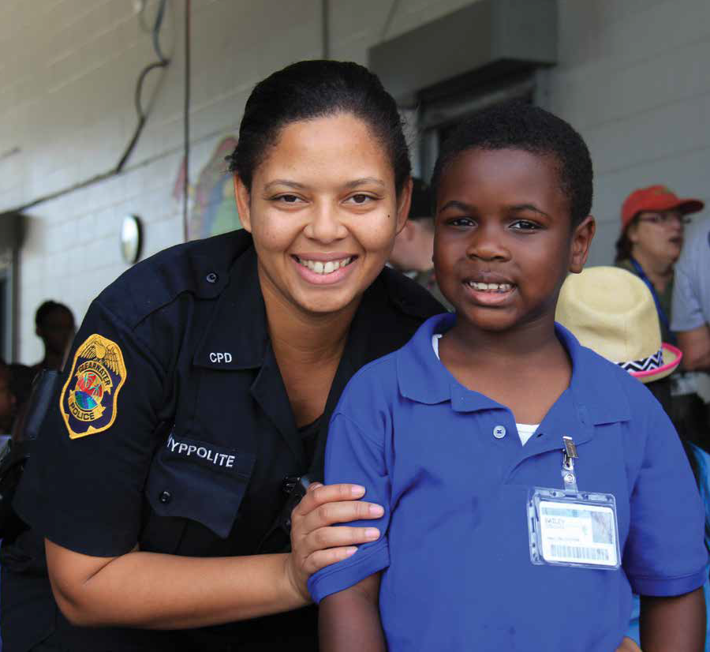Part of our Community Champion mindset is understanding the challenges faced by individuals in vulnerable populations of our community. The Clearwater Police Department will begin creating programs designed to improve our response strategies to individuals with mental health concerns, special-needs adults and special-needs children.
STRATEGIC GOAL: Create a special-needs registry system that centralizes background information relating to juveniles or adults who may wander from their home, caregiver or assisted living facility.
The department will increase utilization of citizen surveys, in cooperation with the University of South Florida, as a means to gauge our effectiveness, citizen trust and perceptions of the department’s ability to complete our core objectives. The USF partnership will help evaluate our crime-control strategies to ensure effective outcomes.
With the growing diversity of Florida’s populations, the number of immigrant groups is rapidly increasing. It is essential that our agency establishes links with these growing communities and the entities that work closely with them. The Clearwater Police Department has, as part of its foundation, a successful outreach tool in its Park, Walk and Talk Program. This program aims to have officers park their cars, walk neighborhoods and talk with residents. The focus of this program is to break down barriers between law enforcement and citizens. During these interactions, officers are asked to focus on four primary goals:
- Establish a connection between residents and their police department.
- Gather intelligence regarding criminal activities and potential suspects in neighborhoods.
- Identify community problems and initiate solutions.
- Reduce community fear of crime.
The Park, Walk and Talk Program is the cornerstone of our ability to instill trust and confidence in our agency.
Technology and Infrastructure
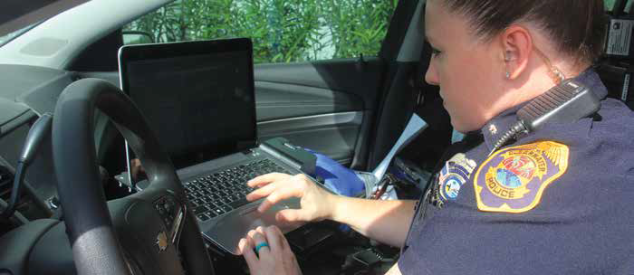As law enforcement has developed during recent years, technology has become an essential tool in all facets of our operations. For years, the Clearwater Police Department has prided itself in the inventive use of technology in law enforcement. Appropriate use of this technology can improve our efficiency. The department will continue to strive to be on the forefront of law enforcement technology, while ensuring our officers and employees have the tools to do their job safely and more effectively.
Immediate access to information and communication has become an essential element of law enforcement. In a world in which nearly everyone has a smartphone, it is now vital that we improve communication abilities for our sworn personnel, through the assignment of individual devices. Not only will a smartphone allow for improved information sharing between officers and between units, it will allow officers to have information, such as driver license and vehicle registration information, available at their fingertips.
With a Computer Aided Dispatch application specifically for these smartphones, officers can have improved situational awareness without impeding dispatch communications. Using smartphones, officers will have the ability to complete some of their reports through an interface with our Records Management System, known as ACISS.
STRATEGIC GOAL: Smartphone issuance to all sworn employees by the conclusion of calendar year 2018.
With the proliferation of data programs available to officers presently, the department will continue to explore the next generation of computer systems available to our personnel. Specifically, the agency aims to improve the ease of use of our infield laptop computers, so our personnel can improve their access to data from their vehicles and more efficiently complete their duties.
It is imperative that the Clearwater Police Department utilizes technology to improve the efficiency of our sworn and non-sworn
personnel. Some examples include:
- The ability to scan documents seamlessly into reports.
- The ability to automate other law enforcement processes, such
as forms creation and transmittal. - The ability to create internal department documents, such as
timesheets and training requests, electronically and route these
through the department for approval.
Social media usage is exploding in our society. It is important, in this expanding field of communication, to ensure our message is not diluted within this sea of information. The department will work to consolidate our social media accounts into one centralized voice, to ensure our message is consistent in theme and “voice.” Similarly, the department accepts crime tips from a multitude of different sources, which can result in confusion. Consolidation of these platforms will streamline processing of received crime tips, as well as minimize citizen and visitor confusion.
STRATEGIC GOAL: Consolidate the department's multitude of twitter accounts into one centralized account, limit the number of the department's tip submission platforms.
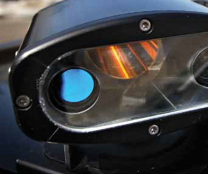As technology continues to evolve, there will be a desire to implement new programs into our technology infrastructure. However, significant consideration must be given to the secondary impacts that new technology may have upon our organization. The desire to solve an encountered problem with technology often leads to an exponential growth of programs, without consideration of the integration of these programs into our existing network of programs, or their secondary impacts upon our personnel. The department will seek to develop an evaluation process for implemented technology so it positively influences our employees’
work product, making it both simpler and more efficient.
STRATEGIC GOAL: Create a committee of department employees to evaluate and make recommendations relating to implemented technology.
The efficient utilization and analysis of data is essential to responding to criminal activity. The Clearwater Police Department will strategically increase implementation of license plate reader technology in a manner consistent with privacy concerns, while maximizing our abilities to identify and locate criminal suspects. Other forms of technology are emerging which will provide additional capabilities to our department.
For instance, drones are devices which can provide a wealth of tactical, search and rescue information to our department with minimal cost to our agency or taxpayers. For example, if the department requested the use of a helicopter to assist in the search of a missing child on Clearwater Beach, there may be a delay in the arrival of the helicopter, limitations on its ability to search, and a significant cost to taxpayers to utilize this resource. However, a drone can be deployed much more quickly, at minimal cost, and with a more refined ability to service the needs of our agency.
STRATEGIC GOAL: Implement a law enforcement drone program consistent with Florida State Statue 934 by the conclusion of the calendar year 2017
As discussed in the “Trust” pillar of this plan, transparency of our operations is vital to ensuring the public is aware of the complexities of the law enforcement profession and of the true nature of our interactions with the public. Beginning in the 2019- 2020 fiscal year, all new patrol vehicles will be equipped with digital video and audio recording equipment. This is a significant investment, but one which is crucial to public understanding of the nature of law enforcement-citizen interactions.
STRATEGIC GOAL: Equip new patrol division vehicles with digital and audio recording equipment beginning in the 2019-2020 fiscal year.
The Clearwater Police Department has an obligation to ensure that we utilize physical force only to the extent necessary based upon the totality of circumstances of a given situation. This concept is emphasized in our core principle of “preservation of life.” Previously, the Clearwater Police reserved the issuance of some of our “less-lethal” force options, such as pepper ball devices and bean-bag shotguns, for our supervisors. Realizing that providing these “less-lethal” force options to our line personnel can save lives and provide our personnel with additional options during an interaction, the department will make strides to provide these force options to our line personnel in the future. The department will continue to explore emerging less-lethal force technologies and options which may provide benefit to our assigned field personnel.
STRATEGIC GOAL: Provide additional training to all sworn personnel in selected less-lethal force options and improve the availability of these force options to field personnel.
Reorganizing our Personnel and Training staff is central to our ability to provide appropriate training in the use of newly incorporated technology. Additionally, in the years encompassed by this strategic plan, the Clearwater Police Department will be required to hire a significant number of new officers. Having sufficiently allocated staff assigned to the Personnel and Training Unit functions allows our agency to appropriately train and prepare our personnel for the future challenges facing law enforcement and the unique requirements of our profession.
As law enforcement is changing, so is the manner in which we patrol or respond to policing situations. As we revisit the deployment of our personnel through this strategic plan, we will critically examine the manner in which we deploy our personnel in areas where traditional police vehicles may not be effective.
“Imagine Clearwater” is one such project where the department may explore alternative patrolling methods, such as walking patrols or alternate methods of service delivery which may not involve traditional police vehicles. Not all of the upcoming technological challenges facing the Clearwater Police Department are directly related to our sworn personnel. One significant example is the required implementation of the National Incident-Based Reporting System, or NIBRS. Implementation of this system is required by the Federal Bureau of Investigation of all law enforcement agencies by 2021 and will replace the current Uniform Crime Reporting system, commonly referred to as the UCR. The NIBRS system requires capturing and reporting of significant additional information than is currently reported through the UCR system. Collecting this information will help our agency, and others who rely on UCR data, use resources more strategically and effectively. However, collating this additional information and data entry into the NIBRS system is anticipated to have workload and manpower demands.
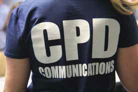STRATEGIC GOAL: Budget for appropriate impacts of implementing NIBRS: Fully implement NIBRS by the end of the calendar year 2020
Next Generation 911, also known as NextGen911 or NG911, is the future of 911 communications. Next Generation 911 is an internet protocol-based system which allows digital information – such as voice, video, photograph and text messages – to flow from the public to 911 dispatch centers, utilizing the 911 network. Implementation of this program will have far-ranging impacts upon the operation of the Clearwater Police Department. Our agency will need to prepare for the receipt of this wealth of information, identify appropriate workflow patterns, provide training to our Communications Center personnel, and develop mechanisms to transmit this data to field personnel in a manner which does not impact emergency response.
STRATEGIC GOAL: Institute foundational technology and infrastructure to support NextGen911 implementation
First Net’s mission is to develop, build and operate a nationwide broadband network dedicated to first responders to provide advanced communication and collaboration technologies needed to help perform their jobs safety and effectively. Authorized by Congress in 2012, this system provides priority to public safety entities during emergency situations and allows for enhanced communication and information sharing. Ensuring integration and compatibility with this system will require significant technical expertise to ensure this system is stable and available to support department communications during an emergency.
STRATEGIC GOAL: Ensure FirstNet compliance and integration by the end of the calendar year 2020.
Planning for some of our facilities needs is also an important consideration. Our District Three facility was constructed in the 1980s and is in need of significant repair. In 2017, the department completed the first phase of construction of a new firearms range at the site of this facility. However, this facility also serves as the home to:
- Our District Three officers, supervisors and administration
- Our Forfeiture Unit
- Our K-9 Unit training site and administrative offices
- Our departmental training facility
A large-scale project will be undertaken to replace these outdated facilities at the site of our current District Three Substation. It is vital this envisioned facility meets the future needs of our department and will include multi-media rooms for department training, community meeting space and multi-purpose areas to sustain public safety personnel during a natural disaster or other catastrophic event.
STRATEGIC GOAL: Initiate capital improvement project to replace the district three facility and complete construction by the end of calendar year 2021.
Our agency’s current sidearm has been in place for many years. Research and advances in weapons technology may require an examination of our weapon platform should our current weapon reach the end of its useful life cycle. As the Clearwater Police Department implements this strategic plan, we recognize that our new direction and new priorities may not conform to our current departmental structure and organization. Therefore, as our agency embarks on this strategic plan, the deployment of resources and personnel will be reexamined to ensure that our employees are aligned in a manner that successfully supports all of the elements of our new vision.
STRATEGIC GOAL: Reorganize and restructure the department's resources to fully support the elements of the strategic plan.
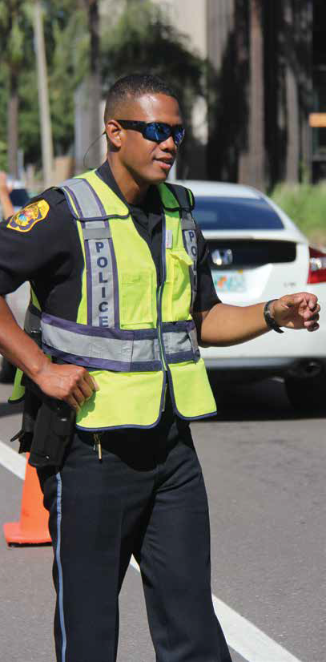Traffic Safety
Traffic safety is consistently one of the primary citizen concerns in our city. Improving traffic safety is critical to ensuring the overall safety of our citizens, visitors and commuters. Traffic safety is not just a concern for our citizens, however. According to National Law Enforcement Officer Memorial Fund’s statistics, over the past decade nearly 400 law enforcement officers have died in traffic crashes.
Ensuring traffic safety is a key function of all of our sworn officers, as our agency strives to reduce fatalities and the dangerous activity of driving under the influence. In addition, research studies have repeatedly proven the deterrence effect that visual traffic enforcement has on criminal activity.
Central to our agency’s approach to improving traffic safety is the creation of a city-wide traffic enforcement and citizen education campaign.
STRATEGIC GOAL: Create agency-wide, comprehensive traffic enforcement and citizen education campaign with the goal of reducing traffic fatalities by 25 percent at the conclusion of the term of this strategic plan.
To improve our traffic safety initiatives will require a department wide approach with management-level supervision. The commander of this project will be responsible for championing our traffic enforcement and traffic/pedestrian safety campaign both internally and externally, and coordinating our efforts to improve citizen safety.
STRATEGIC GOAL: Designate a management-level commander to draft and implement a departmental traffic safety initiative.
Central to this traffic safety initiative is the understanding that enforcement is not a long-term solution to traffic safety efforts. The department must work cooperatively with the city’s Traffic Engineering Division, and other traffic safety partners, to develop long-term and effective traffic safety solutions to high-volume crash intersections, speeding concerns and other impacts to pedestrian and driver safety.
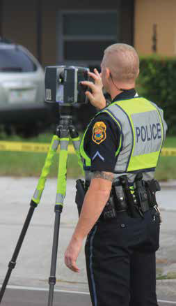When traffic fatalities occur, our agency must have the most advanced capabilities to investigate the incident, ensure it is investigated properly and to discern whether any traffic engineering improvements can be made to prevent further tragedies. Traffic Homicide Investigators are the specially trained investigators who are assigned to these complex investigations. Yet, these skilled investigators are often quickly assigned to other demanding specialties or selected for other assignments. As a result, the department is continually looking for additional Traffic Homicide Investigators. The department aims to increase the number of Traffic Homicide Investigators assigned to the Patrol Division, improve the training level of all investigators assigned to the Traffic Investigations Team and on-scene investigative ability at crash scenes.
STRATEGIC GOAL: Increase the number of traffic homicide investigators assigned to the traffic homicide team. Achieve 75 percent compliance of investigator training at the traffic crash reconstruction level.
With the implementation of Amendment Two in Florida, the potential legalization of cannabis, and the proliferation of opioids and synthetic opioids throughout our country, our agency will need to improve our ability to identify the impacts of alcohol, narcotics and other types of drugs on individuals, particularly as it relates to operating a motor vehicle. The Clearwater Police Department will aim to increase the number of Drug Recognition Experts within our agency, to improve our ability to recognize the impacts of drugs and narcotics and identify the most successful route to prosecution when individuals endanger the lives of others through driving-under-the-influence incidents.
STRATEGIC GOAL: Implement a drug recognition expert program within the patrol division.
Researched and Written By: Major David Dalton
Approved by: Chief Daniel Slaughter
Designed By: Laura Del Valle
The following members of the Department’s Management Staff had input into the development of this Strategic Plan: |
|||||
| Deputy Chief Donald Hall | Major Eric Gandy | Major William Valveri | Lt. John Connor | Lt. Kevin D'Amuci | Lt. Brian McAuley |
| Lt. Anthony Monte | Lt. Michael Ogliaruso | Lt. Laura Spelman | Lt. Michael Walek | Communications Manager Tracy Squitieri | Grants Manager Janet Skinner |
| Administrative Support Manager Steven King | Public Information Officer Rob Shaw | ||||
Department-wide listening and feedback sessions were held on June 27, 2017, June 29, 2017, and July 6, 2017, with the following individuals in attendance. |
|||||
| Sergeant Nikole Eaton | Sergeant Sergio Fidelis | Detective Sergeant Todd Turpack | Detective Lesa Phillips | Detective Eliad Glenn | Detective Margaret Hasty |
| Detective Michael Hasty | Officer Brian Kanicki | Crime Analyst Kathy Perry | Payroll Technician Betty Hoskins | Senior Accountant Sue Becotte | Officer Kelly Brinkman |
| Officer Dylan Drummond | Detective Kevin Boyle | Sergeant Jay Holsombach | Officer Michael Morrea | Detective Sergeant Natalia Illich-Hailey | Detective Sergeant Timothy Downes |
| Detective Sergeant Ramon Cosme | Sergeant Steve Baginski |
Corporal Adam Kraft |
|||